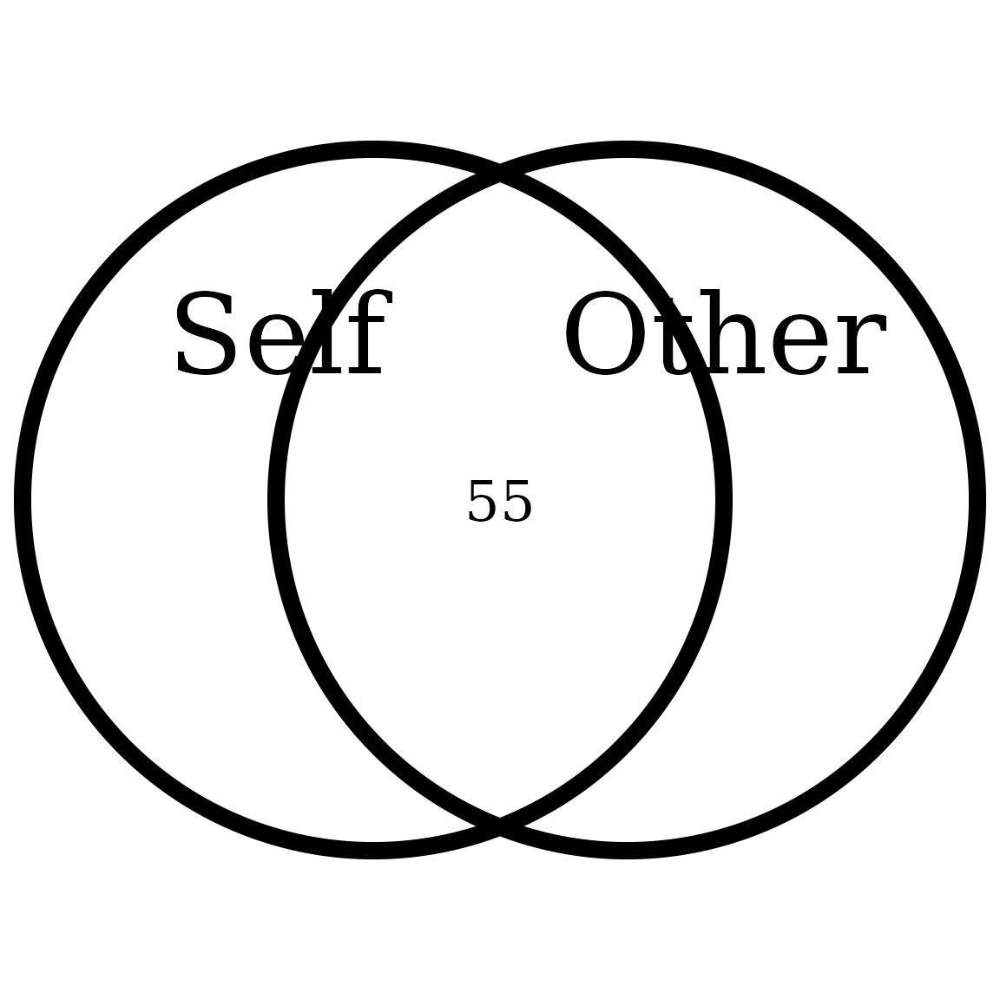
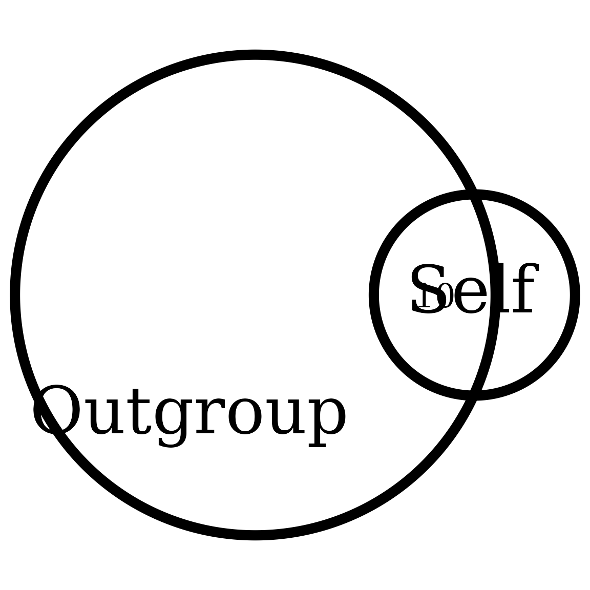

Interpolating the Inclusion of the Other in the Self Scale
Rémi Thériault
February 28, 2020
Source:vignettes/circles.Rmd
circles.RmdFor anyone in social psychology using the Inclusion of the Other in the Self (IOS) Scale to measure self-other merging, you might have wished that you could know for sure how much actual percentage self-other overlap there is between your participant and a target group or individual.
Indeed, the IOS response choices go from 1 to 7 only, and unfortunately these don’t match the percentage overlap from the circle images (i.e., 1/7 is not 14% overlap, and 7/7 is not 100% overlap). You can observe this on the original IOS scale below.

So through trial and error (using the VennDiagram
package), I was able to determine the approximate actual area
overlap from the pictures (below).

I feel like the area overlap is pretty close to the original scale.
Based on this, I used the approx() function to interpolate
any responses so that 1 = 0% (overlap), 2 = 10%, 3 = 20%, 4 = 30%, 5 =
55%, 6 = 65%, and 7 (the maximum) = 85%.
But that also means that a continuous response (for example based on a group average) can also be plotted accurately (e.g., a score of 6.84 would turn into 81.8% area overlap). Let’s see a few examples.
Getting started
Load the rempsyc package:
Note: If you haven’t installed this package yet, you will need to install it via the following command:
install.packages("rempsyc"). Furthermore, you may be asked to install the following packages if you haven’t installed them already (you may decide to install them all now to avoid interrupting your workflow if you wish to follow this tutorial from beginning to end):
install_if_not_installed("VennDiagram")


Changing labels
You can also change group labels with the categories
argument, although ‘Self’ and ‘Other’ are the defaults.
overlap_circle(3.12, categories = c("Humans", "Animals"))
Saving to file (PDF or PNG)
First save the plot to an object:
plot <- overlap_circle(3.5)
Then you can use the ggplot2 save command directly with the object name:
ggplot2::ggsave(plot,
file = "overlap.pdf", width = 7, height = 7,
unit = "in", dpi = 300
)
# Change the path to where you would like to save it.
# If you copy-paste your path name, remember to
# use "R" slashes ('/' rather than '\').
# Also remember to specify the .pdf extension of the file.Pro tip: Recommended dimensions for saving is 7 inches wide and 7 inches high. The
.epsformats are recommended for scalable vector graphics for high-resolution submissions to scientific journals. However, you can also save in other formats, such as.tiff,.png, or.jpg.
Example figure
This allowed me for instance, for one study (https://doi.org/10.1177/17470218211024826), to compare three of my groups side-by-side following an intervention:

Special Cases
It has been requested to be able to either provide the percentage
overlap directly, from 1 to 100, or to provide a vector of length three
specifying the area from each circle and overlapping region. This is now
possible. To better understand the specificities of using the overlap
values directly, please see:
?VennDiagram::draw.pairwise.venn.
overlap_circle(55, scoring = "percentage")
overlap_circle(100, scoring = "percentage")
overlap_circle(c(17, 10, 97),
scoring = "direct",
categories = c("Self", "Outgroup")
)
Thanks for checking in
Make sure to check out this page again if you use the code after a time or if you encounter errors, as I periodically update or improve the code. Feel free to contact me for comments, questions, or requests to improve this function at https://github.com/rempsyc/rempsyc/issues. See all tutorials here: https://remi-theriault.com/tutorials.